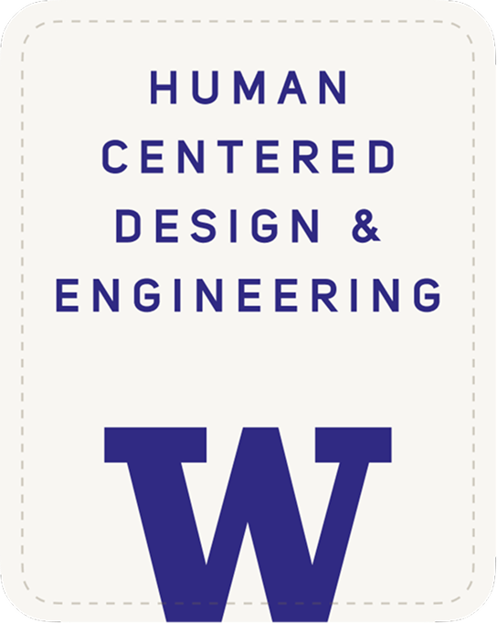

Accessibility for macOS
Reach into
equations.
The first tool that lets screen reader users structurally navigate mathematical expressions. Not linearly. Structurally.
A new way to experience math.
Four steps. Three keystrokes. Every equation becomes a structure you can explore, not a sentence you endure.
Equations are walls, not windows.
A sighted student glances at x² + 3x + 5 = 20 and instantly isolates the first term. A blind student hears the entire expression read start to finish, every time. There's no way to jump ahead, no way to grab a sub-expression, and no way to insert it into your own work.
Math Recall reads what you're working on.
Copy an equation or let Math Recall capture it directly from the focused app using macOS Accessibility APIs. The equation is instantly parsed into a tree structure.
Line. Side. Term.
Press a number to pick a line. L or R for a side. Another number for a term. VoiceOver announces every step: "Left side, 3 items" → "x squared."
Space. Inserted. Done.
Press Space. The selected sub-expression is inserted at your cursor. You never left your editor. The entire interaction was non-visual and took under two seconds.
Calculus-level math.
From plain text.
No LaTeX required. No MathML. Math Recall accepts the kind of math notation people actually type.
Equations, powers, fractions
Full operator precedence, implicit multiplication, multi-line equation support with tolerant parsing.
Integrals, derivatives, limits
Definite and indefinite integrals, derivative notation, limit expressions with approach syntax.
Trig, logarithms, roots
sin, cos, tan, ln, log, square roots, nth roots. All parsed into navigable tree nodes.
Error-tolerant by design
Skips non-math lines. Preserves last valid path on error. 400ms multi-digit input buffering. Never drops you out of recall mode.
Five layers. Each
independently testable.
A deliberate pipeline, not a monolith. Every component can be run and verified in isolation.
Born from research.
Built at the University of Washington.
Math Recall started as We Are All Blind — an accessibility research project in HCDE 515 where we co-designed with a blind computer science student to understand how he actually experiences math. The finding was clear: the barrier isn't comprehension. It's memory.

If a human scribe is a 10, this tool is like a 9 or 9.5.Abdallah Altahaineh, design partner, after testing the prototype
Built with Swift.
Runs on your Mac.
No Electron. No browser. A native macOS app that starts instantly, uses minimal resources, and respects your system accessibility settings.
Navigate math
on your terms.
Download Math Recall and start working with equations the way you think about them — as a structure you can explore, not a sentence you have to sit through.
This page and the Math Recall application are designed to meet WCAG 2.1 AA accessibility standards. If you encounter any accessibility issue, please contact us.